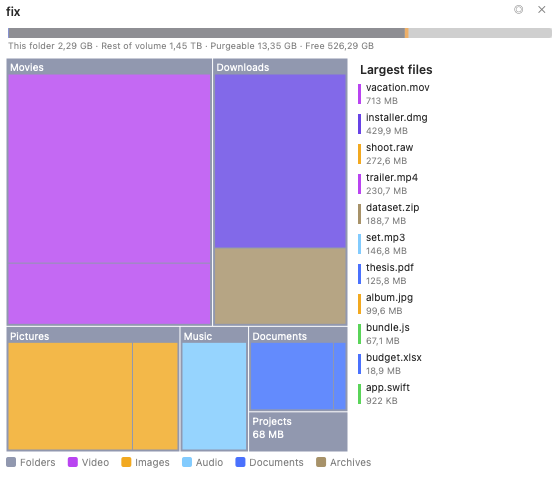

Mapa de disco
Mapa de disco es un complemento integrado que muestra, de un vistazo, qué está ocupando espacio en una carpeta o en todo un volumen. Analiza la carpeta que elija y dibuja cada elemento con un tamaño proporcional al espacio que realmente ocupa en el disco, de modo que los mayores consumidores de espacio destacan de inmediato. Puede profundizar en las carpetas, ver cómo se concilia su análisis con el espacio libre, purgable y oculto del volumen, y hacer limpieza directamente desde el mapa.
Iniciar un análisis
- En el panel activo, vaya a la carpeta (o volumen) que desea medir.
- Elija Comandos ▸ Mapa de disco: Analizar carpeta actual.
- La vista de Mapa de disco se abre a la derecha y analiza en segundo plano, mostrando un recuento en curso de elementos y bytes. Las carpetas grandes terminan en unos segundos: el análisis lee los metadatos de directorio en bloque y trabaja en varios núcleos de la CPU.

(Figura: La vista de mapa de árbol, coloreada por categoría de archivo, con la barra de volumen encima y la lista de archivos más grandes a la derecha.)Leer el mapa
- Cada bloque (mapa de árbol) o segmento de anillo (gráfico solar) se dimensiona según el tamaño real en disco del elemento, de modo que la imagen coincide con lo que informan Finder y el sistema.
- Los bloques se colorean por tipo de archivo —vídeo, imágenes, audio, documentos, código, archivos comprimidos, aplicaciones, imágenes de disco—, con una leyenda a lo largo de la parte inferior. Puede cambiar a un mapa de calor por tamaño en los ajustes.
- Haga clic en una carpeta para profundizar en ella; la ruta de navegación de la parte superior muestra dónde se encuentra, y el botón ◂ retrocede un nivel.
- Pase el cursor sobre cualquier bloque para ver su ruta completa, su tamaño y su recuento de elementos.
Dos vistas: mapa de árbol y gráfico solar
Mapa de disco ofrece dos visualizaciones, y puede alternar entre ellas con el botón ◎ / ▦ de la cabecera o en la página de ajustes:
- Mapa de árbol: rectángulos anidados, la vista más densa para detectar los archivos individuales más grandes.
- Gráfico solar: anillos concéntricos (uno por cada nivel de profundidad de carpeta) alrededor de la carpeta actual, ideal para ver cómo se distribuye el espacio en un árbol profundo.
 (Figura: La vista de gráfico solar: el disco interior es la carpeta actual y cada anillo es un nivel más profundo.)
(Figura: La vista de gráfico solar: el disco interior es la carpeta actual y cada anillo es un nivel más profundo.)
La barra de volumen
La barra de la parte superior concilia su análisis con el volumen completo:
- Analizado / Esta carpeta: cuánto ocupa la carpeta analizada.
- Oculto (en la raíz del volumen) o Resto del volumen (para una subcarpeta): todo lo que no está en este análisis, incluidas las carpetas protegidas por el sistema, otros usuarios y las instantáneas.
- Purgable: espacio que macOS puede recuperar automáticamente, principalmente instantáneas locales de Time Machine y cachés.
- Libre: espacio disponible en este momento.
Cuando el volumen tiene instantáneas locales, la barra muestra un control · N instantáneas (ⓘ); haga clic en él para ver una lista de solo lectura, con una indicación para gestionarlas en Utilidad de Discos o en Time Machine. Mapa de disco nunca elimina instantáneas por su cuenta.
Archivos más grandes
Active Mostrar la lista de archivos más grandes para ver los archivos más grandes de la carpeta actual ordenados por tamaño, cada uno con una etiqueta de color según su categoría. Haga clic en uno para resaltarlo en el mapa.
Hacer limpieza desde el mapa
Haga clic con el botón derecho en cualquier bloque para ver las acciones:
- Abrir en el panel izquierdo / Abrir en el panel derecho: muestra el elemento en un panel de archivos.
- Mostrar en Finder.
- Mover a la Papelera: elimina solo ese elemento; el mapa se actualiza sin un nuevo análisis completo.
Para eliminar varios elementos a la vez, use el Recopilador: haga clic con el botón derecho ▸ Marcar para el Recopilador en cada elemento y, a continuación, haga clic en el botón 🗑 N de la cabecera para mover todo lo que ha marcado a la Papelera en un único paso confirmado.
Ajustes
Mapa de disco añade su propia página a la ventana de Ajustes (Configuración ▸ Ajustes ▸ Mapa de disco):
- Estilo de gráfico: mapa de árbol o gráfico solar.
- Codificación por colores: por tipo de archivo (categoría) o por tamaño (mapa de calor).
- Permanecer en el volumen inicial: no pasar a otros discos montados.
- Mostrar la barra de volumen y Mostrar la lista de archivos más grandes.
Los cambios se aplican de inmediato a un Mapa de disco abierto.
Notas
- Mapa de disco mide el tamaño asignado (en disco) y cuenta los archivos con enlace fijo solo una vez, de modo que sus totales concuerdan con el espacio usado del volumen en lugar de contarlo de más.
- De forma predeterminada, el análisis permanece en el volumen inicial, por lo que no se adentra en otros discos montados ni en recursos compartidos de red.